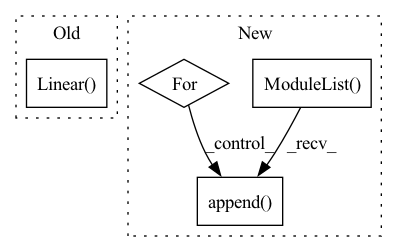

Pattern ID :1904
Before Change
self.use_batch_norm = use_batch_norm
self.fc1 = nn.Linear( observation_shape[0], 256)
self.fc2 = nn.Linear(256, 256)
if use_batch_norm:
self.bn1 = nn.BatchNorm1d(256)After Change
self.feature_size = hidden_units[-1]
in_units = [observation_shape[0]] + hidden_units[:-1]
self.fcs = nn.ModuleList()
self.bns = nn.ModuleList()
for in_unit, out_unit in zip(in_units, hidden_units):
self.fcs.append( nn.Linear(in_unit, out_unit))
if use_batch_norm:
self.bns.append(nn.BatchNorm1d(out_unit))
def forward(self, x):In pattern: SUPERPATTERN
Frequency: 4
Non-data size: 4
Instances Fragment ID: 4701951
Project Name: takuseno/d3rlpy
Commit Name: 557b11a8d5cf75edfc0a2928399d5192d1757ddb
Time: 2020-06-16
Author: takuma.seno@gmail.com
File Name: skbrl/models/torch/heads.py
M Class Name: VectorHead
N Class Name: VectorHead
M Method Name: __init__(4)
N Method Name: __init__(3)
M Parent Class: nn.Module
N Parent Class: nn.Module
M File Name: skbrl/models/torch/heads.py
N File Name: skbrl/models/torch/heads.py
M Start Line: 84
M End Line: 91
N Start Line: 96
N End Line: 114
Before Change
super(Generator, self).__init__()
self.z_dim = z_dim
self.device=device
self.fc1 = nn.Linear( z_dim, hidden_dim, bias = False)
self.bn1 = nn.BatchNorm1d(hidden_dim, affine = False, eps=1e-6, momentum = 0.5)
self.fc2 = nn.Linear(hidden_dim, hidden_dim, bias = False)
self.bn2 = nn.BatchNorm1d(hidden_dim, affine = False, eps=1e-6, momentum = 0.5)
self.fc3 = LinearWeightNorm(hidden_dim, input_dim, weight_scale = 1)After Change
self.device=device
self.hidden_dim=hidden_dim
self.layers = torch.nn.ModuleList()
self.bn_layers=torch.nn.ModuleList()
self.bn_b = torch.nn.ParameterList()
self.num_hidden=len(hidden_dim)
self.activations=activations
for _ in range(self.num_hidden):
if _==0:
in_dim=z_dim
else:
in_dim=hidden_dim[_-1]
out_dim=hidden_dim[_]
fc=nn.Linear(in_dim, out_dim, bias=False)
nn.init.xavier_uniform(fc.weight)
self.layers.append(fc)
self.bn_layers.append( nn.BatchNorm1d(out_dim, affine = False, eps=1e-6, momentum = 0.5))
self.bn_b.append(Parameter(torch.zeros(out_dim)))
self.fc = LinearWeightNorm(hidden_dim[self.num_hidden-1], input_dim, weight_scale = 1)
Fragment ID: 4701950
Project Name: ygzwqzd/lamda-ssl
Commit Name: ea5ee280fc4c0242970da002d41f42c1aaed9c96
Time: 2022-03-18
Author: 1129198222@qq.com
File Name: Semi_sklearn/Network/ImprovedGan.py
M Class Name: Generator
N Class Name: Generator
M Method Name: __init__(6)
N Method Name: __init__(5)
M Parent Class: nn.Module
N Parent Class: nn.Module
M File Name: Semi_sklearn/Network/ImprovedGan.py
N File Name: Semi_sklearn/Network/ImprovedGan.py
M Start Line: 63
M End Line: 71
N Start Line: 70
N End Line: 91
Before Change
self.cat_embedding.append(
nn.Embedding(cat, embed_dim)
)
self.fc = nn.Sequential(nn.Linear(out_features=embed_dim, in_features=1) ,
nn.ReLU()
)
self.num_embedding = clones(self.fc, no_num)After Change
CategoricalEmbedding(cat, embed_dim)
)
self.num_embedding = nn.ModuleList()
for i in range(no_num):
self.num_embedding.append(
NumericalEmbedding(embed_dim)
)
self.no_num = no_num
self.no_cat = no_cat
Fragment ID: 4701949
Project Name: ogunlao/saint
Commit Name: 35f005449ee9712d4ca6e12208a2948b803307a3
Time: 2021-06-18
Author: ogunlao@yahoo.com
File Name: models/embedding.py
M Class Name: Embedding
N Class Name: Embedding
M Method Name: __init__(5)
N Method Name: __init__(5)
M Parent Class: nn.Module
N Parent Class: nn.Module
M File Name: models/embedding.py
N File Name: models/embedding.py
M Start Line: 54
M End Line: 59
N Start Line: 71
N End Line: 77
Before Change
self.use_batch_norm = use_batch_norm
self.fc1 = nn.Linear( observation_shape[0], 256)
self.fc2 = nn.Linear(256, 256)
if use_batch_norm:
self.bn1 = nn.BatchNorm1d(256)After Change
in_units = [observation_shape[0]] + hidden_units[:-1]
self.fcs = nn.ModuleList()
self.bns = nn.ModuleList()
for in_unit, out_unit in zip(in_units, hidden_units):
self.fcs.append(nn.Linear(in_unit, out_unit))
if use_batch_norm:
self.bns.append( nn.BatchNorm1d(out_unit))
def forward(self, x):
h = x
for i in range(len(self.fcs)): Fragment ID: 4701948
Project Name: takuseno/d3rlpy
Commit Name: 557b11a8d5cf75edfc0a2928399d5192d1757ddb
Time: 2020-06-16
Author: takuma.seno@gmail.com
File Name: skbrl/models/torch/heads.py
M Class Name: VectorHead
N Class Name: VectorHead
M Method Name: __init__(4)
N Method Name: __init__(3)
M Parent Class: nn.Module
N Parent Class: nn.Module
M File Name: skbrl/models/torch/heads.py
N File Name: skbrl/models/torch/heads.py
M Start Line: 84
M End Line: 91
N Start Line: 96
N End Line: 114
Before Change
super(LinearClassifier, self).__init__()
self.dense = nn.Linear(seq_len*input_features, h_features_loop)
self.looplayer1 = nn.Linear( h_features_loop, h_features_loop)
self.looplayer2 = nn.Linear(h_features_loop, h_features_loop)
self.logits = nn.Linear(h_features_loop, label_features)
self.class_loops = class_loops
self.class_neg_slope = class_neg_slopeAfter Change
self.n_layers_classif = n_layers_classif
self.neg_slope_classif = neg_slope_classif
self.layers = nn.ModuleList()
for i in range(int(n_layers_classif)):
self.layers.append( nn.Linear(h_dim_classif, h_dim_classif))
self.layers.append(nn.Linear(h_dim_classif, label_features))
def forward(self, x): Fragment ID: 4701946
Project Name: bioshape-lab/pirounet
Commit Name: 1ba849e316ed092f1bf28095a906fe7422a5897c
Time: 2022-05-25
Author: papillon@umail.ucsb.edu
File Name: move/classifiers.py
M Class Name: LinearClassifier
N Class Name: LinearClassifier
M Method Name: __init__(7)
N Method Name: __init__(7)
M Parent Class: nn.Module
N Parent Class: nn.Module
M File Name: move/classifiers.py
N File Name: move/classifiers.py
M Start Line: 16
M End Line: 20
N Start Line: 19
N End Line: 26